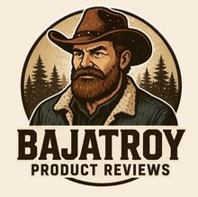
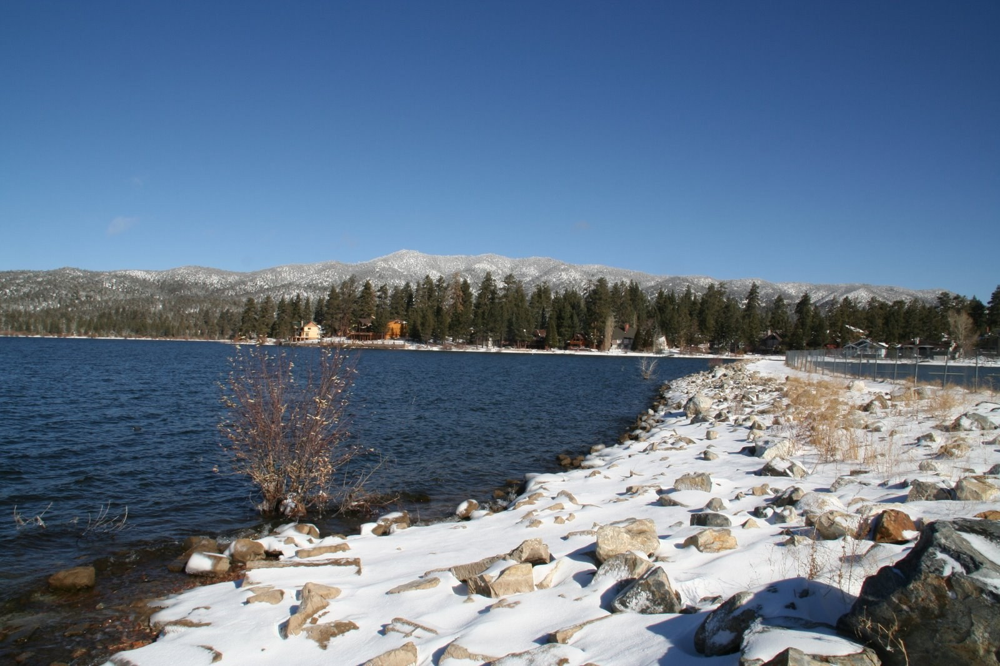
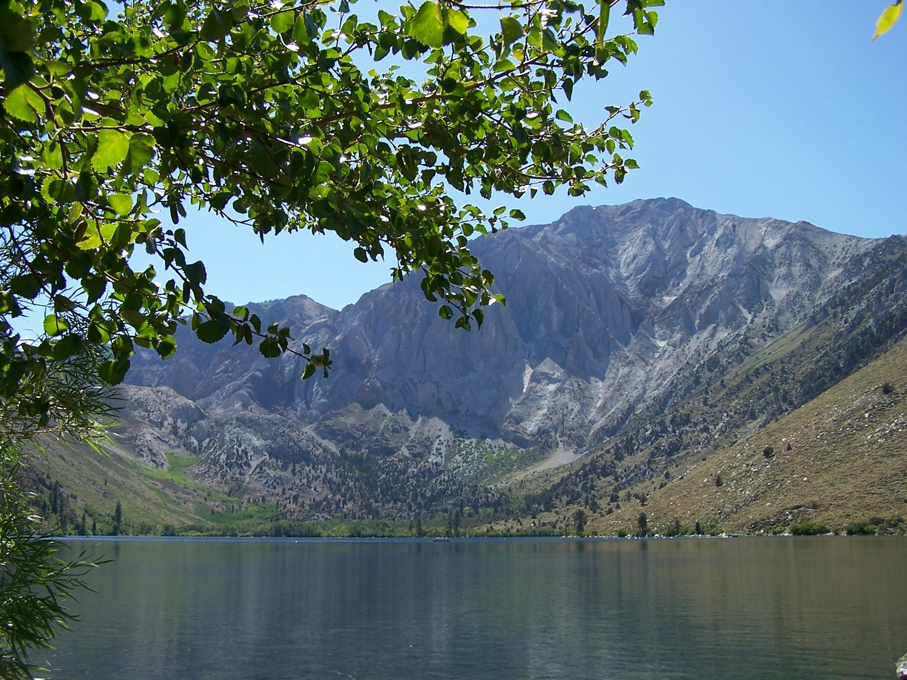
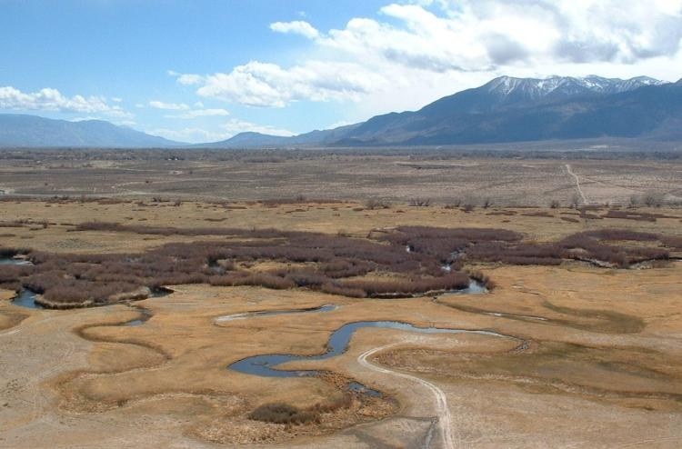
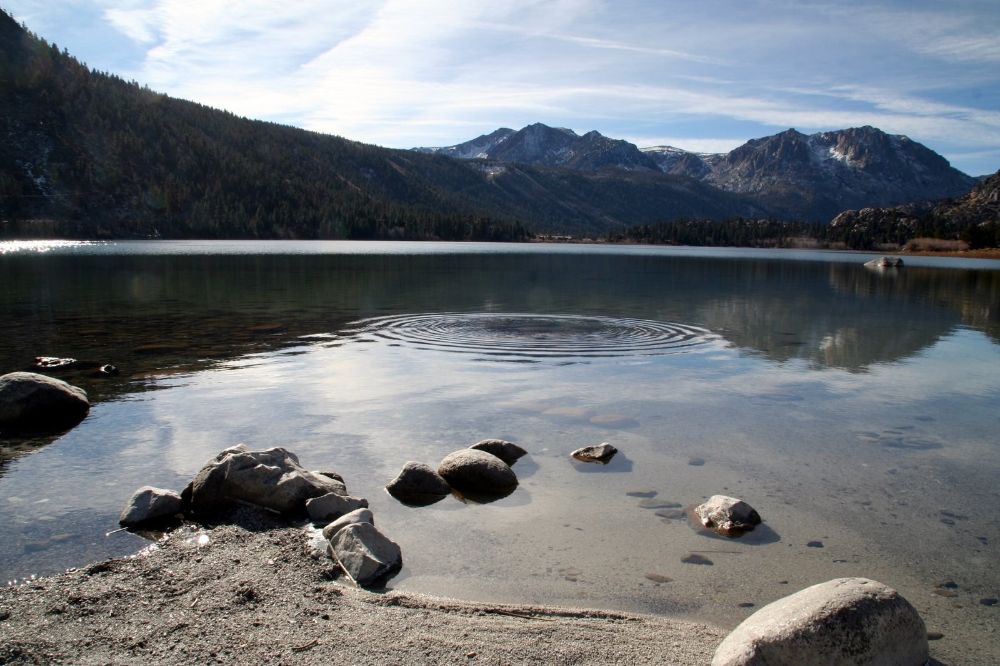
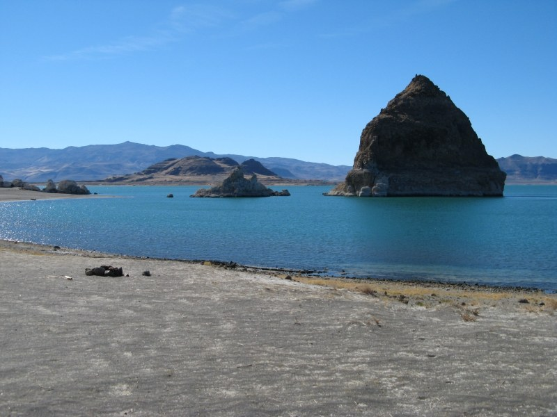
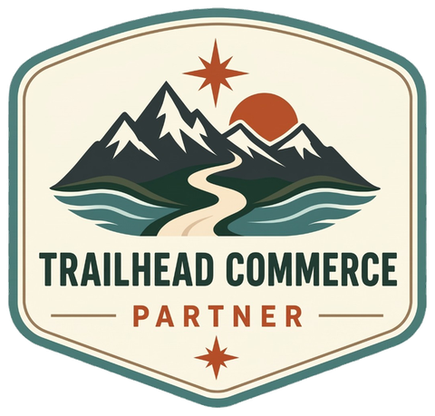

Alpine lakes above the LA basin — the southern gateway to the 395 corridor.
BAIT & GEAR. powerBait, worms, and small spinners for trout; light jigs and spinners for bass
BAIT & GEAR. powerBait, worms, and shrimp for trout; jig-spinners, crankbaits, and soft plastics for bass; stink bait for catfish

Trout country — world-famous stillwaters strung along the eastern Sierra.
BAIT & GEAR. fly rigs — streamers, nymphs, and dry flies; trolling spoons & dodgers; worms and powerBait
BAIT & GEAR. jigs, light spinners, and small crankbaits; nymphs and terrestrials on the fly rod
BAIT & GEAR. ultralight spinning gear, small spoons and spinners; worms and powerBait from shore
BAIT & GEAR. worms and powerBait-style baits for trout; jigs, crankbaits, and soft plastics for bass
BAIT & GEAR. light spinners, worms, and powerBait; tiny jigs for panfish
BAIT & GEAR. worms, powerBait, and small spinners; simple shore setups

The river that feeds it all — meadow water, wild fish, year-round fishing.
BAIT & GEAR. nymphs, caddis, and dry flies; worms and small spinners also produce
BAIT & GEAR. light spinners, worms, and small crankbaits; float-tube fly setups
BAIT & GEAR. nymphs and dries — adams, BWO, PMD; worms and small spinners from the bank
BAIT & GEAR. spinnerbaits, jigs, and soft plastics for bass; worms and spinners for trout

Loop drives, alpine lakes, and wild creeks at the headwaters.
BAIT & GEAR. trolling spoons and dodgers for mackinaw; spinners and worms for rainbows
BAIT & GEAR. trolling rigs, spinners, and worms; family-friendly shore setups
BAIT & GEAR. downriggers or lead-core for macks; streamers at the inlets for browns
BAIT & GEAR. ultralight rods and small spinners; dry flies on long 5x leaders
BAIT & GEAR. small worms, nightcrawlers, and tiny jigs
Classic Nevada-side trout water, from Markleeville down through town.
BAIT & GEAR. nymphs, caddis, stoneflies, and PMDs; ultralight spinners or worms
BAIT & GEAR. small jigs, worms, and spinners; fly rods for the trout
BAIT & GEAR. trolling, worms, and powerBait-style baits; jigs and small spinners
BAIT & GEAR. worms, powerBait, and shrimp for trout; jigs and soft plastics for bass; stink bait for catfish
BAIT & GEAR. small worms, tiny jigs, and light-tackle spinners

Desert lakes and alpine hike-ins at the top of the run.
BAIT & GEAR. trolling spoons and dodgers; powerBait-style baits from shore
BAIT & GEAR. ultralight spinning gear, small spinners and worms; light fly rod
BAIT & GEAR. trolling rigs and small spinners; light fly-fishing for trout
Every corridor holds water that never makes the list. Troy’s spots are out there — down a dirt road off 395, past the no-name pond, around the second bend. They won’t be printed here. Discover them on your own: drive slow, read the water, leave no trace, and keep them quiet.
Every deck, every review, every link — all in one place.
